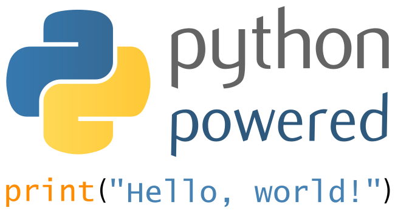

Write your code in Python 3
Python 3 is there since 2008. However, we still find a lot of projects that doesn’t run on Python3. I’ve started programming in Python 3 when I started using Arch Linux as my main linux distribution a few years ago.

Why Python 3?
Python 3 is the future of python. With Python 3 you will get all the cool features that are being added to the language. Core python developers have been focusing in Python 3 for a while now, and you should be using those features into your projects.
Around the web I’ve seen many guesses on why Python 3 wasn’t fully adopted until now. This answer on StackExchange is quite a good starting point to know more.
Starting With Python3
When you are starting a new project. Start it in Python 3. You may hear people say to you: “Don’t use Python 3, library x and y is not supported” or worse, “Why Python 3? Python 2 is much better”. Don’t listen to those comments. Most of great libraries and frameworks supports Python 3 already. If they are not. They are probably working on fixing this situation right now. And you could help them if you have some sparetime. Check their issue pages. Starting a project in Python 2 today is probably not a good idea.
If you need to support people running on python 2. Use a compatibilty module python_two.py inside your package. For example:
|
|
In the compat module. You can write code that fallsback to python 2. For example if in your downloader module you ask for user input. Python 3 has a new safe input function: input(). In Python 2 however, input() will try to evaluate user entry:
Python2:
|
|
Python3:
|
|
A good python_two.py module could be something like that:
|
|
The idea is to remove this module when you decide not to support Python 2 any longer.
Start your code in Python 2 then…
Please don’t! If you can do it, start it on Python 3. It will be much harder to port your project to Python 3 once the project gets larger. Check this presentation by Brett Cannon to see why Python 3 is much better or his video presentation if you prefer.
Learn more
There are a large amount of information about Python 3 around the web:
- Python wiki
- Porting to python 3
- Python 3 Wall of Super Powers
- PyVideos
There are also some great books on the subject:
Some videos as well:
Comments